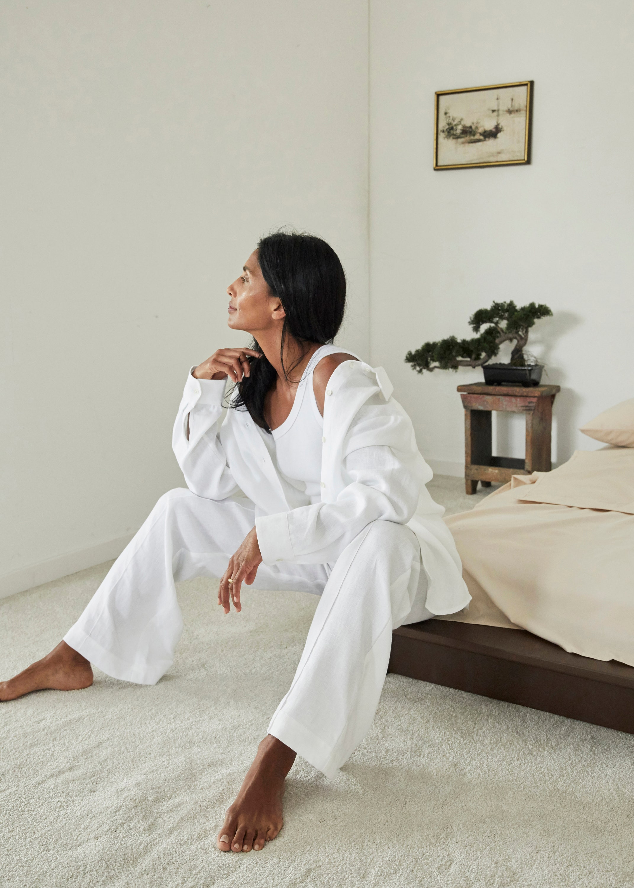

Why More Young Designers Are Going Direct-to-Consumer in 2020.
VOGUE
By Emily Farra
November 4, 2020
///
Since the pandemic hit back in March, the fashion industry has been in a state of flux. Not all changes are good—we’ve seen our fair share of shuttered businesses—but there have been a few silver linings in the mix. In those early days, with stores closed and production stalled, designers seized the opportunity to finally, actually fix a few problems, starting with retail.

Many advocated for a shift in the delivery calendar, moving fall collections to September and spring to March, for instance, when people are ready to shop those seasons. The idea was that it would create a ripple effect and address retail’s other pain points, too, like excessive discounting (because clothes are delivered too early), unsold merchandise (because collections are too big), and general inefficiencies and waste (for both reasons). As Dries Van Noten wrote in his open letter, a more thoughtful retail calendar would allow for fewer collections, fewer products, and an “increase [in] sustainability throughout the supply chain.”
That’s certainly an improvement on the pre-pandemic model of designing four to six collections per year, often with exclusive capsules in between. But bumping delivery windows and scaling back collections doesn’t go far enough, at least in terms of fashion’s carbon footprint. New Zealand designer Maggie Marilyn was an early advocate of change to the wholesale model and voiced her frustrations long before the pandemic. For one, many of her retail partners were unwilling or unable to share adequate information about her clothes, which are made using organic and recycled materials, and Marilyn found that buyers were constantly asking her to create additional styles, colors, or options. When asked if the wholesale model itself was inhibiting designers from being truly sustainable—or at least making it incredibly difficult—Marilyn’s response was unflinching: “Absolutely.”
“I tried designing smaller collections, thinking I could reason with the buyers [about] why, but the lack of choice wasn’t received so well”
“The tight turnarounds between seasons left such limited time for research and development that finding and testing new innovative fabrications, or having time to ensure fabrics are coming from traceable supply chains, is incredibly difficult. And further to this, you need to air freight all of your fabrics due to the tight turnaround, which produces significantly higher carbon emissions than if we sea freighted them.”
Given the looming climate crisis, Marilyn wasn’t willing to keep waiting for those systemic changes. So she removed herself from the system entirely: Starting today, Maggie Marilyn is a 100% direct-to-consumer business, meaning her collections will only be available on her website and in her first store in Auckland, also opening today. In a video announcing the change, Marilyn states:
“We need change that’s faster, stronger, and bolder.… Our decisions will no longer be dictated by seasons or someone else’s rules. We will design slowly and mindfully, [with] seasonless offerings that are traceable, organic, recycled, or repurposed, and drive forward our mission around transparency, circularity, inclusivity, and regeneration.”
She’s unlocking the freedom to own every decision about what she creates, how much is produced, how it’s shipped (i.e., by sea freight, to reduce emissions), when it’s delivered, and what it should cost.
Marilyn isn’t the only designer taking back that control. The pandemic accelerated the trend of designers going direct-to-consumer, which had already been in motion for years. (Consider the success of brands like Dôen, Glossier, or Entireworld—they don’t just own their sales, they’ve built an entire community around their message.) Some designers, like Mara Hoffman, are going “mostly” direct-to-consumer while keeping a select number of wholesale accounts, usually specialty stores and small boutiques. Hoffman said she’s reduced her retailers from around 200 to just 10, and will invest more time and money in her own e-commerce platform; in an open letter, she wrote: “Hopefully, we can build something that actually resembles the vision we are hoping for—for the future of this industry and planet as a whole.” Tibi’s Amy Smilovic ended many of her wholesale partnerships this season as well, and is exploring alternative retail models, including influencer partnerships designed to drive traffic back to tibi.com.
Marilyn isn’t wasting time rewriting her rule book. Her direct-to-consumer launch coincides with a total “inventory reversal”: Somewhere, the line of organic, recyclable essentials she launched a year ago, now represents 95% of her business, while her ready-to-wear pieces will be introduced as smaller, limited edition capsules. Initially conceived as a complement to her main collections, which were shown at Fashion Week, Somewhere exceeded Marilyn’s expectations: After its launch, she saw a 140% revenue increase and a 90% increase in web traffic each quarter. But beyond its growth and popularity, Marilyn also saw Somewhere as an opportunity to scale up her regenerative agriculture efforts. “One of the things we have come up against in wanting to influence and enable our [cotton and wool] growers to transition towards regenerative agriculture is we simply don’t buy enough from them to carry weight in their decisions,” she explains, referring to the yearslong period of time a farm may spend converting from organic to regenerative practices. “For them to listen, Maggie Marilyn needs to be a key customer that can offer fixed higher prices for the long term in order to support them in an initially costly, and perhaps intimidating, transition. The scale we have seen with Somewhere will allow us to get to this point.”
"We need change that’s faster, stronger, and bolder.… Our decisions will no longer be dictated by seasons or someone else’s rules." Maggie Marilyn
Since the pandemic hit back in March, the fashion industry has been in a state of flux. Not all changes are good—we’ve seen our fair share of shuttered businesses—but there have been a few silver linings in the mix. In those early days, with stores closed and production stalled, designers seized the opportunity to finally, actually fix a few problems, starting with retail.
Many advocated for a shift in the delivery calendar, moving fall collections to September and spring to March, for instance, when people are ready to shop those seasons. The idea was that it would create a ripple effect and address retail’s other pain points, too, like excessive discounting (because clothes are delivered too early), unsold merchandise (because collections are too big), and general inefficiencies and waste (for both reasons). As Dries Van Noten wrote in his open letter, a more thoughtful retail calendar would allow for fewer collections, fewer products, and an “increase [in] sustainability throughout the supply chain.”
That’s certainly an improvement on the pre-pandemic model of designing four to six collections per year, often with exclusive capsules in between. But bumping delivery windows and scaling back collections doesn’t go far enough, at least in terms of fashion’s carbon footprint. New Zealand designer Maggie Marilyn was an early advocate of change to the wholesale model and voiced her frustrations long before the pandemic. For one, many of her retail partners were unwilling or unable to share adequate information about her clothes, which are made using organic and recycled materials, and Marilyn found that buyers were constantly asking her to create additional styles, colors, or options. When asked if the wholesale model itself was inhibiting designers from being truly sustainable—or at least making it incredibly difficult—Marilyn’s response was unflinching: “Absolutely.”
“I tried designing smaller collections, thinking I could reason with the buyers [about] why, but the lack of choice wasn’t received so well,” she tells Vogue. “The tight turnarounds between seasons left such limited time for research and development that finding and testing new innovative fabrications, or having time to ensure fabrics are coming from traceable supply chains, is incredibly difficult. And further to this, you need to air freight all of your fabrics due to the tight turnaround, which produces significantly higher carbon emissions than if we sea freighted them.”
Given the looming climate crisis, Marilyn wasn’t willing to keep waiting for those systemic changes. So she removed herself from the system entirely: Starting today, Maggie Marilyn is a 100% direct-to-consumer business, meaning her collections will only be available on her website and in her first store in Auckland, also opening today.
In a video announcing the change, Marilyn states: “We need change that’s faster, stronger, and bolder.… Our decisions will no longer be dictated by seasons or someone else’s rules. We will design slowly and mindfully, [with] seasonless offerings that are traceable, organic, recycled, or repurposed, and drive forward our mission around transparency, circularity, inclusivity, and regeneration.” She’s unlocking the freedom to own every decision about what she creates, how much is produced, how it’s shipped (i.e., by sea freight, to reduce emissions), when it’s delivered, and what it should cost.
Marilyn isn’t the only designer taking back that control. The pandemic accelerated the trend of designers going direct-to-consumer, which had already been in motion for years. (Consider the success of brands like Dôen, Glossier, or Entireworld—they don’t just own their sales, they’ve built an entire community around their message.) Some designers, like Mara Hoffman, are going “mostly” direct-to-consumer while keeping a select number of wholesale accounts, usually specialty stores and small boutiques. Hoffman said she’s reduced her retailers from around 200 to just 10, and will invest more time and money in her own e-commerce platform; in an open letter, she wrote: “Hopefully, we can build something that actually resembles the vision we are hoping for—for the future of this industry and planet as a whole.” Tibi’s Amy Smilovic ended many of her wholesale partnerships this season as well, and is exploring alternative retail models, including influencer partnerships designed to drive traffic back to tibi.com.
Marilyn isn’t wasting time rewriting her rule book. Her direct-to-consumer launch coincides with a total “inventory reversal”: Somewhere, the line of organic, recyclable essentials she launched a year ago, now represents 95% of her business, while her ready-to-wear pieces will be introduced as smaller, limited edition capsules. Initially conceived as a complement to her main collections, which were shown at Fashion Week, Somewhere exceeded Marilyn’s expectations: After its launch, she saw a 140% revenue increase and a 90% increase in web traffic each quarter. But beyond its growth and popularity, Marilyn also saw Somewhere as an opportunity to scale up her regenerative agriculture efforts. “One of the things we have come up against in wanting to influence and enable our [cotton and wool] growers to transition towards regenerative agriculture is we simply don’t buy enough from them to carry weight in their decisions,” she explains, referring to the yearslong period of time a farm may spend converting from organic to regenerative practices. “For them to listen, Maggie Marilyn needs to be a key customer that can offer fixed higher prices for the long term in order to support them in an initially costly, and perhaps intimidating, transition. The scale we have seen with Somewhere will allow us to get to this point.”
It will take time for Marilyn to introduce those regenerative fibers in her collection, but her customers have a lot to be excited about today. She’s also introducing a timely Somewhere Sport line of organic cotton sweatshirts, joggers, and track shorts, and has extended her entire collection’s size range from U.K. 6 to 20, including the blazers and leggings she launched last year.
For those lucky enough to be in New Zealand (for more reasons than one!), the full collection is available in Marilyn’s first store in Auckland’s Newmarket neighborhood. Unsurprisingly, it isn’t your average shop: She calls it a “home,” not a store, and her employees are “change makers” who have been trained in the brand’s rigorous sustainability practices so they can have meaningful conversations with customers. “This year just made me think, If not now, then when?” Marilyn adds. “It’s time to be brave, and for young and established brands to begin breaking down the old model, and to do what works for them. And ultimately bring our customers further and deeper on this path with us.”